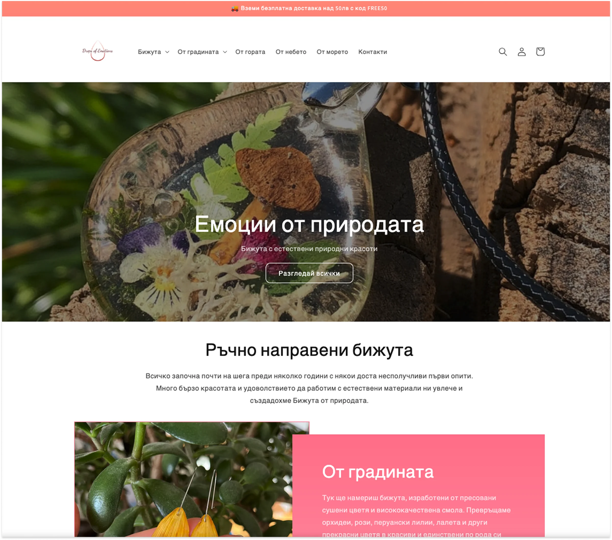
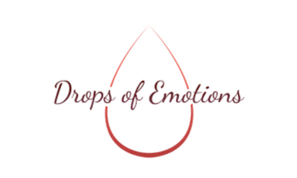
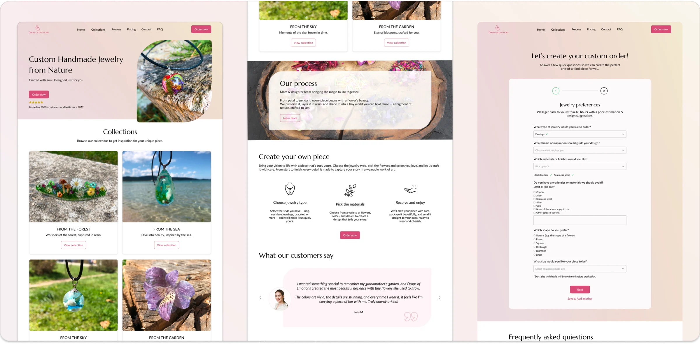

From redesign to a live online shop for a handmade brand
Moving a jewelry brand from a standard online store to a fully personalized ordering model. I refreshed the identity and designed a guided order form, then critiqued my first version and redesigned it. Finally I redesigned the shop in Claude Design and built it myself with Claude: a custom store with Stripe checkout, Speedy courier integration and its own admin, live in a matter of days.

Overview & problem
Drops of Emotions makes handmade jewelry from real flowers and natural elements. Each piece is unique and designed to preserve nature's beauty.
The old website didn't communicate that value, had no clear way to order custom pieces, and looked dated. The aim was a new ordering model focused entirely on personalized jewelry, with an identity and site that reflect the craft, intuitive navigation and a guided path for bespoke orders.
The first redesign: brand, website and a custom order form
Where it started
A standard online shop: a promo bar, a catalogue menu and a dark hero with no clear next step. Nothing explained that every piece could be made to order.

1. Brand refresh
The logo was redrawn to feel cleaner and more contemporary while keeping its emotional connection. A warm, nature-inspired palette and elegant typography reflect the brand's handmade, natural character.


2. Website redesign
The structure was reorganized around Collections, Process, Pricing, Contact and FAQ. A new hero states the brand's value and leads to the main “Order now” action, and each collection gets a short, emotional tagline.

3. Custom order concept
A two-step order form guides customers through designing their own piece, with simple questions, helpful hints and friendly placeholders. An FAQ on the homepage and order page answers common questions up front.
- 01A form that felt like a checklistDropdowns and an eight-item allergy list. v2 uses photos, tiles and chips.
- 02Price was the biggest unknownv2 says up front: price first, pay only after you approve.
- 03No sense of what you were buildingv2 adds a live summary and a recap after you send.
A custom order that feels like part of the gift
Same brand, logo and photography. The site now sells one thing clearly, a piece made for you, and the order flow is built around choices people can see.
Pick a type, a collection and a shape and watch the summary update, then go through to the confirmation.
Open the prototypeDesigned with Claude Design, built with Claude, live in days
The old shop ran on Shopify. Once I worked more hands-on with AI, I redesigned the site in Claude Design on top of my earlier work, then built the whole store with Claude on Cloudflare. No agency and no developer: a fully working e-commerce site that I designed, built and launched myself.
Redesign in Claude Design
The v1 and v2 thinking turned into a full shop design: homepage, collections, product pages and checkout.
Custom checkout
Card payments through Stripe Checkout, plus cash on delivery, in a checkout built for this shop.
Speedy courier API
Delivery connected directly to the Speedy courier, so orders flow from checkout to shipping.
Custom admin
A simple admin panel for the makers to manage products and orders.